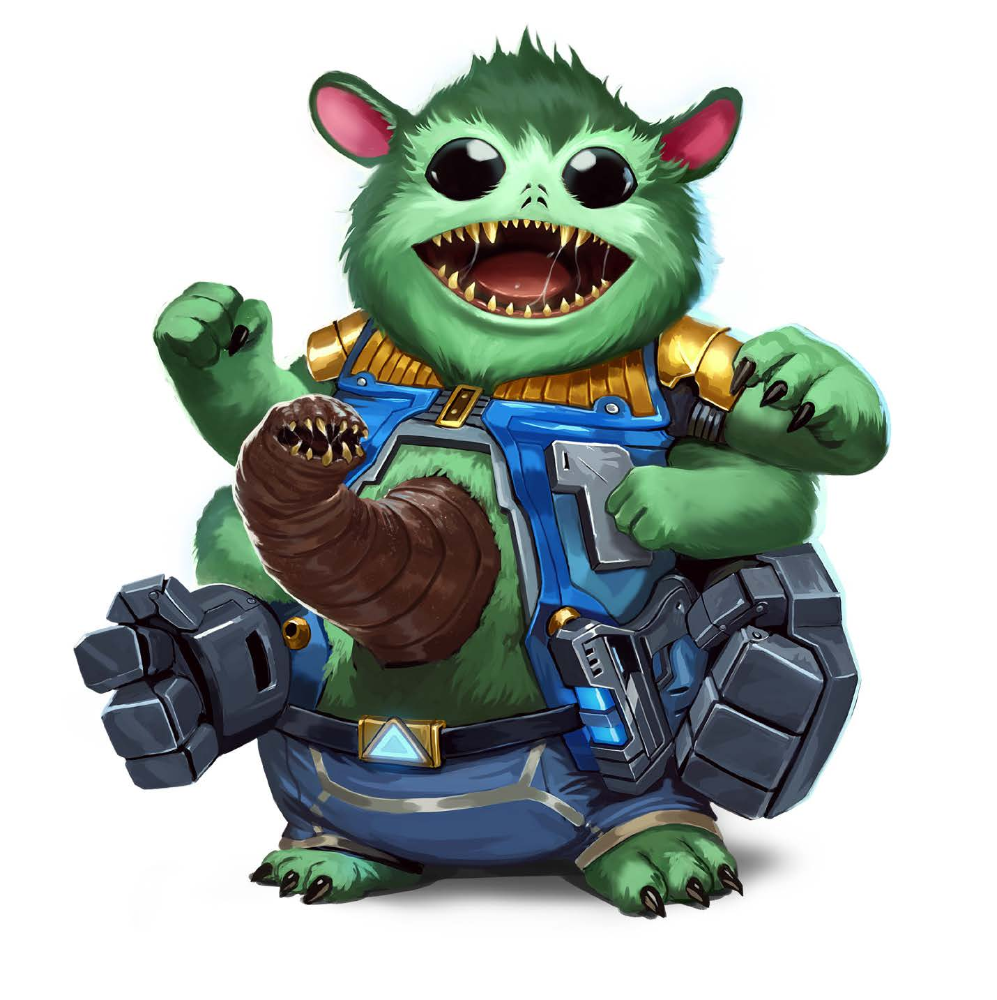

| Aggiungi +1 alle seguenti statistiche: (Attributi +): Carisma, Destrezza, Un aumento libero da assegnare. | Sottrai -1 alle seguenti statistiche: Saggezza. |
LANGUAGES: Comune, Vesk.
Una lingua regionale a scelta. Lingue aggiuntive pari al modificatore di Intelligenza (se positivo). Scegli liberamente dalla lista dei linguaggi del sistema o del tuo pianeta natale.
Visione Crepuscolare: Vedi nella luce fioca come se fosse luce intensa, ignorando lo stato occultato causato dalla scarsità di illuminazione.
Sei Braccia: Puoi impugnare oggetti fino a sei mani contemporaneamente. Una coppia è designata come mani attive: usi gli oggetti solo con esse. Scambi la selezione spendendo l'azione Scambiare Mani (1 Azione).
Il retaggio di uno skittermander è influenzato dall'ambiente in cui è cresciuto o dal clima a cui si è adattato biologicamente durante lo sviluppo cellulare.
Nonostante tu sia un adulto fatto e finito, hai mantenuto la tua bocca-stomaco sul ventre (stomach-mouth) a causa di un capriccio evolutivo o impianto biotecnologico.
Sei cresciuto nel regno sotterraneo ipogeo di Gadraveech. Sviluppi una pelliccia rada e pallida, una corporatura molto snella e grandi occhi luminescenti.
Usi gli arti extra inferiori per muoverti e stabilizzarti anziché manipolare oggetti. Di conseguenza possiedi quattro braccia e quattro gambe.
Hai trascorso la vita in una comunità estremamente coordinata, focalizzata sul lavoro di squadra e sull'assistenza reciproca immediata.
Prerequisiti: Lignaggio Everwhelp Skittermander
Raramente provi panico o esitazione di fronte alle minacce biologiche o tecnologiche della galassia.
Sei rimasto profondamente affascinato da un argomento iper-settoriale o scientifico specifico.
Sei convinto che un solido abbraccio vigoro sul campo risolva ogni conflitto ostile.
Straripi di energia cinetica e adrenalina cellulare, muovendoti a velocità vertiginose sul campo di attrito.
Preservi le usanze tradizionali e le storie antiche della cultura e della lingua del tuo popolo.
La coordinazione naturale delle tue braccia ti consente di ridistribuire l'equipaggiamento al volo.
Frequenza: 1 volta ogni 10 minuti | Ti prepari istantaneamente ad assistere un alleato in una manovra tattica.
Possiedi un briciolo di talento innato e improvvisato in qualsiasi campo della conoscenza logica o applicata.
Frequenza: 1 volta ogni 10 minuti | Sincronizzi temporaneamente gli impulsi neurali per attivare gli arti extra.
Frequenza: 1/giorno | Cadi in un isolamento mentale assoluto concentrandoti su un singolo problema logico o situazionale.
Prerequisiti: Everwhelp | Frequenza: 1/ora | Requisiti: L'ultimo attacco è un Colpo andato a segno con le fauci ventrali.
Prerequisiti: Hyper | Frequenza: 1/giorno | Scateni l'energia repressa in una scarica cinetica furiosa e imprevedibile.
Superi qualsiasi barriera o incapacità biologica pur di comunicare e stringere alleanze planetarie.
Innesco: Un nemico fallisce criticamente un Colpo in mischia contro di te | Requisiti: Almeno una mano attiva libera, bersaglio a portata (max 1 taglia superiore).
Prerequisiti: Zoomies
Frequenza: 1/giorno | Requisiti: Impugni oggetti esclusivamente nelle mani attive | Coordini contemporaneamente tutte e sei le mani.
Prerequisiti: Zoomies